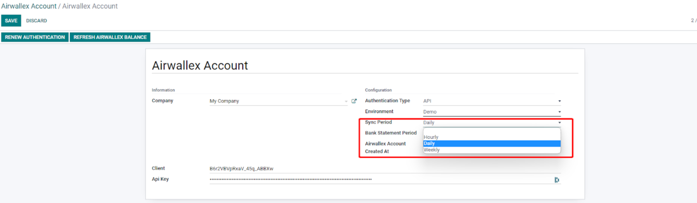
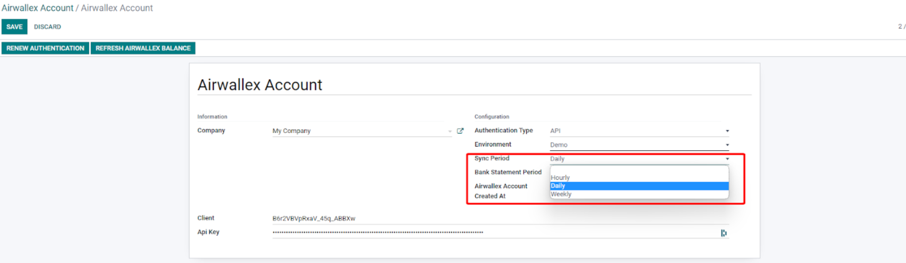

1. Installation
1.1. Download
- To get started with the Airwallex module, you need to download the supported version. Choose from Version 16, Version 15, or Version 14.
1.2. Install module on the Odoo
-
After downloading the correct version, unzip the module and place it in the add-ons
folder on your server. Then, log in as an administrator and go to the
Applications menu. Click on 'Update Apps list' to refresh the module list.
Now you can see the Airwallex application and click on 'Install'.
2. Configure Airwallex
2.1. Application Overview
-
After installation, the Airwallex application will appear on the main menu.
If you can't see the application, ensure that the logged-in user has at least
Airwallex user access rights.
2.2. Create account and login
-
The first step after installation is to create an Airwallex account.
To create an account, go to Airwallex → Configuration → Airwallex Account
and create a new account.
Note: Ensure that you choose the correct environment (demo for staging or production for real credentials) while entering your credentials
OAuth2 Authentication
-
OAuth2 authentication is the preferred way to register an account.
To do this, please contact Airwallex via email
(strategic-partnership@airwallex.com)
to set up the callback URL and get the authentication credentials.
Enter the credentials and click the 'OAuth2 Authentication' button to trigger the
first authentication.

Follow the OAuth2 flow to allow Odoo to fetch the credentials.
Finally, click on the ‘Get Airwallex balance’ button to fetch all wallet data
from Airwallex and sync it with your Odoo account.
You can check the synchronized wallets by going to the Airwallex wallet tab.
Note: We will only sync currencies that are active in Odoo -
refer to section ‘Set up currencies’ below to activate more currency feeds Odoo
will only sync active currencies. To activate additional currencies,
search for ‘currencies’ on the main dashboard, activate the required currency,
and then click on the 'Refresh Airwallex balance' button.
On the account page, you can choose the frequency of Airwallex balance update and bank statement posting. For more information, refer to the 'Refresh frequency' section below.
Note: The bank statement feature has been removed in version 16,
so there is no need to post the bank statement.
2.3. Setup Currencies
-
In Odoo, we can only synchronize an Airwallex wallet if the currency is active in Odoo.
Therefore, if a wallet is not syncing in Odoo, check the status of the currency by
searching for ‘currencies’ on the main dashboard.
On this page you can activate the required currency:
Then, go back to your Airwallex account and click on the
button ‘Refresh Airwallex balance’
Now, you can see that the new wallet synchronized in Airwallex Wallet

2.4. Initiate Your Bank Account Journal
-
This is the last step to synchronize the transaction from your wallet to Odoo.
Open the Airwallex wallet that you want to configure by clicking on the name.
Then configure the journal for the wallet:
Note: Only user with Airwallex Administrator can see the Edit button
-
After clicking on the 'Edit' button, you will be shown a dialog box
- The journal you want to assign the wallet to
- The Initialisation method:
- Import historical data
Will import all the data from the date you will choose
-
Set initial balance
Will create only one record with the current balance
-
None
Will not initialize the journal
- Choose the journal and the method according to what you want to do.
-
In the following example, we will Import historical data
Once you click on 'Apply', Odoo will fetch all the records until the chosen
date and create a bank statement record with all the lines.
-
You can see the bank statement by clicking on the button on the top right on the wallet:
-
You can verify the value imported and post the bank statement
3. Advanced Configuration
3.1. Refresh Frequency
-
On the Airwallex account configuration page, you can set up the frequency
(hourly, daily or weekly) for Odoo to import information from Airwallex.

-
To set up the refresh frequency, you can access the feature through the search
function if you have an ‘Admin’ role and are in developer mode.
The scheduled action is performed using ‘Airwallex.account.ir.cron’ to
fetch information from Airwallex.
-
You can modify the value here to select your preferred refresh frequency:

Contact & Support
If you are experiencing any issues with your Odoo connection,
please raise a ticket with the Airwallex
customer support team (https://help.airwallex.com/hc/en-gb/requests/new)
or contact Airwallex at
support@airwallex.com
Follow the OAuth2 flow to allow Odoo to fetch the credentials.
Finally, click on the ‘Get Airwallex balance’ button to fetch all wallet data from Airwallex and sync it with your Odoo account.
You can check the synchronized wallets by going to the Airwallex wallet tab.
Note: We will only sync currencies that are active in Odoo - refer to section ‘Set up currencies’ below to activate more currency feeds Odoo will only sync active currencies. To activate additional currencies, search for ‘currencies’ on the main dashboard, activate the required currency, and then click on the 'Refresh Airwallex balance' button.
On the account page, you can choose the frequency of Airwallex balance update and bank statement posting. For more information, refer to the 'Refresh frequency' section below.
Note: The bank statement feature has been removed in version 16, so there is no need to post the bank statement.
On this page you can activate the required currency:
Then, go back to your Airwallex account and click on the button ‘Refresh Airwallex balance’
Now, you can see that the new wallet synchronized in Airwallex Wallet
Note: Only user with Airwallex Administrator can see the Edit button
- The journal you want to assign the wallet to
- The Initialisation method:
- Import historical data
Will import all the data from the date you will choose -
Set initial balance
Will create only one record with the current balance -
None
Will not initialize the journal
- Import historical data
Once you click on 'Apply', Odoo will fetch all the records until the chosen date and create a bank statement record with all the lines.

Contact & Support
If you are experiencing any issues with your Odoo connection, please raise a ticket with the Airwallex customer support team (https://help.airwallex.com/hc/en-gb/requests/new) or contact Airwallex at support@airwallex.com